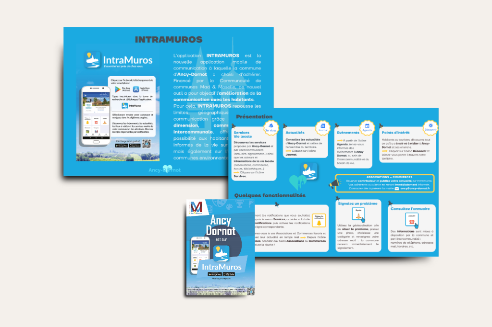

Application IntraMuros

{kind=link}
{kind=link}
En détail...
- CategorieRéseaux sociaux & Community Management
- Contexte Alimentation d'une application mobile territoriale avec du contenu pertinent visant à informer les habitants et valoriser le territoire dans le cadre de la stratégie de communication de proximité
- Technologie Intramuros (plateforme de communication territoriale mobile)
- Mon rôle Pilotage du projet d'implémentation Création de contenu Configuration et personnalisation de l'application Formation et animation du réseau de 9 contributeurs Communication auprès des acteurs locaux sur l'utilisation de l'outil
- Défis relevés Adaptation de l'application aux spécificités et besoins de la commune Mobilisation des associations et commerces pour alimenter la plateforme de façon autonome Coordination avec partenaires externes (associations, commerçants) Promotion de l'application auprès des différentes générations d'habitants Maintenance d'un flux régulier d'informations actualisées Formation des contributeurs aux bonnes pratiques de publication
- Impact territorial Outil devenu central dans la stratégie de communication de proximité Valorisation de l'écosystème local (associations, commerces) Renforcement du sentiment d'appartenance territoriale Innovation dans la communication publique locale
- Collaboration Animation du réseau de 9 contributeurs autonomes (associations, commerces) Formation dispensée aux utilisateurs contributeurs Coordination avec les services municipaux pour les informations officielles
- Résultats Amélioration de la diffusion des informations locales 9 comptes contributeurs actifs formés et autonomes Adoption par la population communale Outil devenu référent pour l'information de proximité Réduction des affichages papier
- URL de l'application (version Desktop) https://www.intramuros.org/ancy-dornot